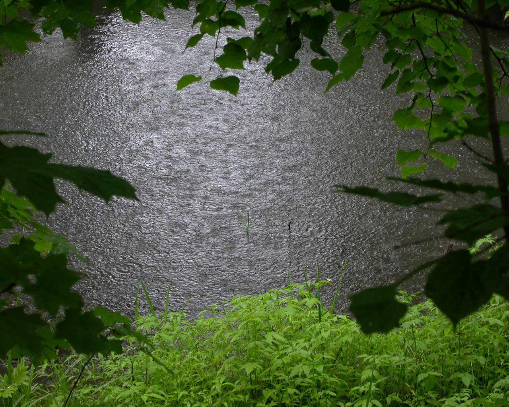

Дождь в лесу
Снимок живописного лесного пруда сделан в начале дождя, когда капли крупные но пока редкие. Я остановил велосипед на сухом месте под деревом чтобы укрыть фотоаппарат, и вдруг заметил такую красоту.

Снимок живописного лесного пруда сделан в начале дождя, когда капли крупные но пока редкие. Я остановил велосипед на сухом месте под деревом чтобы укрыть фотоаппарат, и вдруг заметил такую красоту.